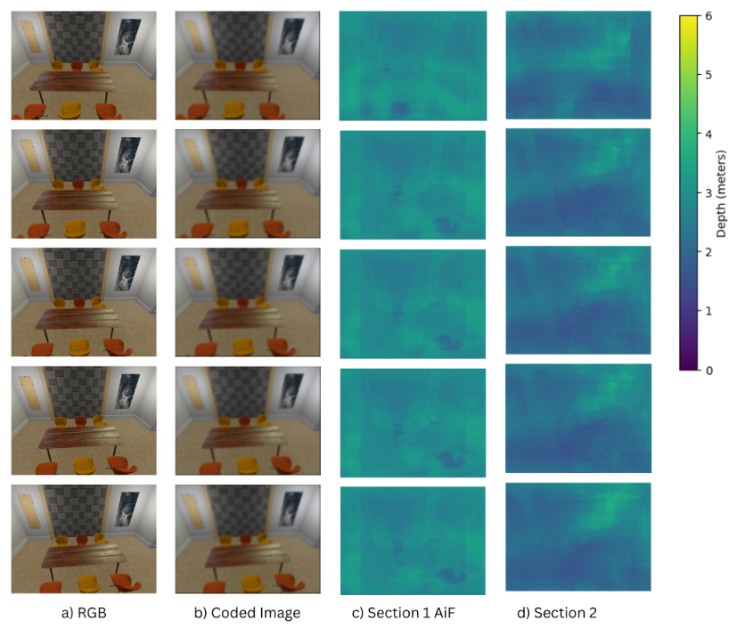
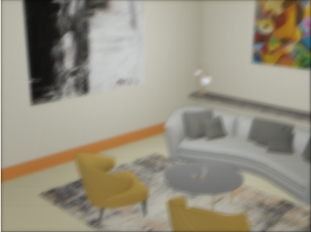
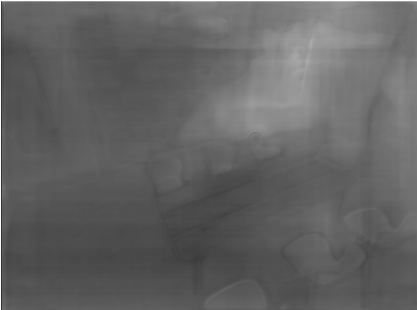

Skills - Coded Aperture Imaging, PyTorch, Depth Estimation, U-Net, CUDA, Image Processing,
Overview
This project, titled Depth-Dependent Image Convolution, explores the integration of coded aperture imaging with deep learning to improve monocular depth estimation from RGB images. Developed as part of MCEN5228 at the University of Colorado Boulder, the approach leverages synthetic blur using custom Point Spread Functions (PSFs) to encode depth information and evaluate performance against conventional RGB-based methods.

The work is divided into two main phases. In Phase 1, RGB images are convolved with depth-specific PSFs derived from quantized depth maps to simulate depth-aware blur. In Phase 2, a U-Net-based neural network is trained separately on both standard all-in-focus (AiF) images and the depth-encoded images to predict depth maps. Performance is evaluated across in-domain and out-of-domain datasets using both quantitative (RMSE, Abs-Rel) and qualitative visualizations.
This hybrid method demonstrates improved depth prediction accuracy in occluded and complex regions, underscoring the benefits of physics-based pre-processing in data-driven monocular depth estimation pipelines.

Implementation
- Depth Map Quantization: Discretized depth maps using binary masks for layer-wise PSF application.
- Convolution Pipeline: Applied 2D convolution on RGB images using PyTorch’s
conv2dfunction for synthetic blur. - Blending Strategy: Blurred outputs from all depth layers blended using masks to form coded RGB images.
- Data Handling: Built a custom PyTorch
Datasetclass for RGB-depth pair management with normalization and cropping. - Model Architecture: U-Net with skip connections and encoder-decoder blocks. Final 1x1 conv layer produced predicted depth map.
- Training: Used weighted MSE loss emphasizing near-field accuracy. Trained with Adam optimizer over 45 epochs.
Results
The model was tested on out-of-domain datasets. Coded RGB input outperformed all-in-focus RGB on multiple metrics.
| Dataset | Input | Abs-Rel | RMSE | FPS |
|---|---|---|---|---|
| Dining Room | AiF | 0.453 | 1.164 | 348 |
| Dining Room | Coded | 0.231 | 0.765 | 380 |
| Corridor | AiF | 1.148 | 1.428 | 307 |
| Corridor | Coded | 0.918 | 1.202 | 393 |
